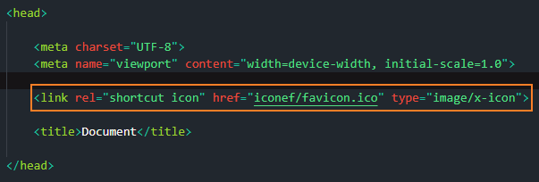
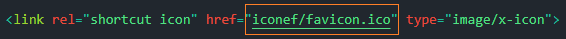

Os ícones de favorito aparecem juntamente com o título do site como visto na imagem abaixo:

Para colocar um favicon em um site é muito simples, basta digitar a tag a seguir dentro da tag "head":
Após isso, substitua todo o texto dentro de "href" pelo nome do ícone que desejar, como no exemplo:
Olhe para a aba do site, acabei colocando um icone de uma pá usando está tag.